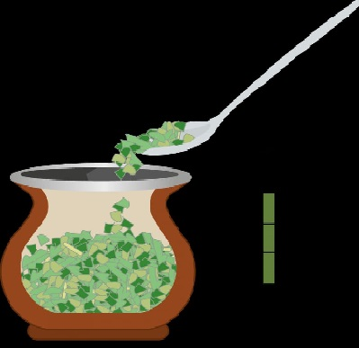
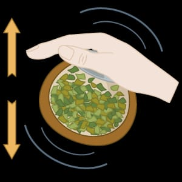
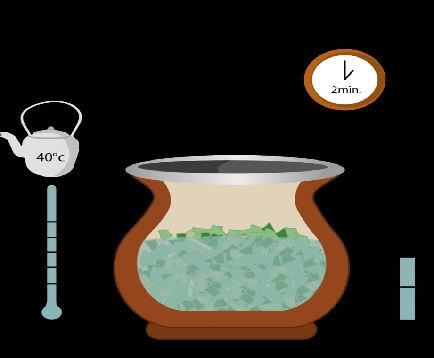
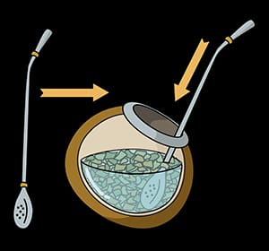
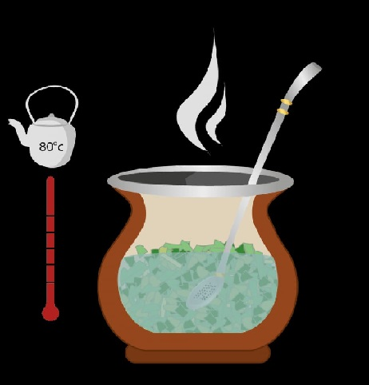

Tarea con listas
En este paso a paso vamos a aprender, como hacer los mejores y más ricos Mates de Argentina
MATERIALES
- Mate
- Bombilla
- Pava
- Agua
- Yerba
- Azucar (opcional)
PASOS A SEGUIR
- Colocar la yerba, se debe cargar las dos terceras partes del mate

- Sacudir el mate, invertir el mate, taparlo con la palma de la mano y sacudirlo unos segunos

- La primera cebada, sebar con agua tibia en la zona mas vacia del mate (como muestra la imagen)

- Poner la bombilla, tapndo el pico para que no entre airey se tape

- Luego seguir cebando con agua caliente
